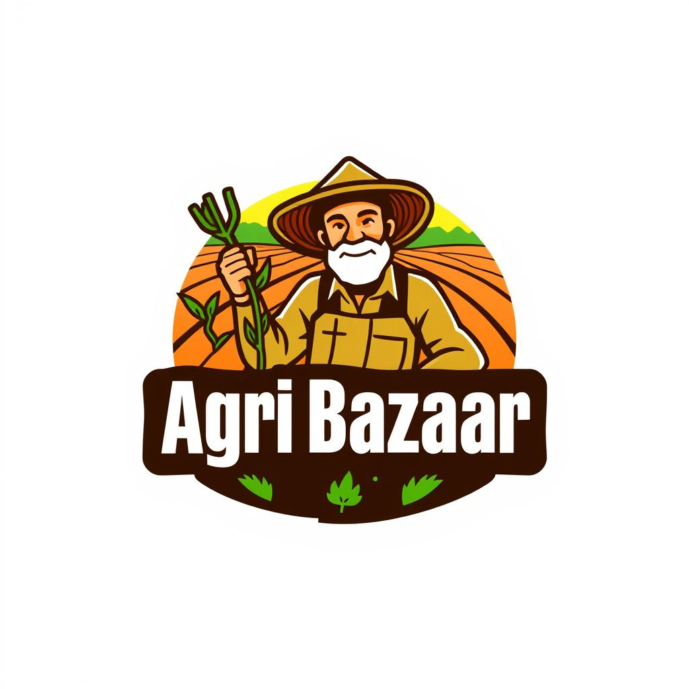

Agri Bazaar
Email : agribaazar@gmail.com
Phone : +91-9938287086
Address : Jagamohan Nagar, Bhubaneswar, India
About AgriBazaar
AgriBaazarConnect is dedicated to bridging the gap between farmers and buyers through our user-friendly online platform. Our mission is to empower farmers with the tools and resources they need to succeed in the digital marketplace while providing buyers with high-quality agricultural products.
Connect with Us
Have questions or need support? Reach out to us through our social media channels or drop us an email:
- Email: support@agribaazar.com
- Facebook: AgriBaazarConnect
- Twitter: @AgriBaazar